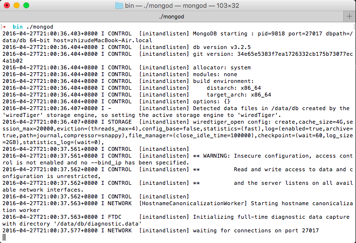
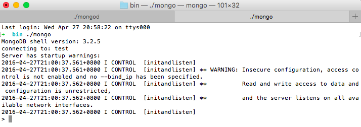

本章节讲的是mongodb的安装，以及客户端使用，简单的操作
下载MongoDB 首先到 MongoDB 官网 www.mongodb.org 下载最新版本mongodb-osx-x86_64-3.2.6.tgz (可能已经更新到其它版本)
安装
解压，然后把解压后文件复制到自己想安装的目录下即可，可以把目录重命名，例如把mongodb-osx-x86_64-3.2.5重命名为mongodb,或用shell命令行 mv 源文件 目标文件。
配置 在根目录下新建数据目录 data，在 data 内部新建 db 目录，或使用shell命令行 。 打开终端, cd 到 mongodb 的根目录下,
mkdir -p .data/db
然后输入
sudo chown -R 输入计算机用户名 /data
TODO:
使用 Homebrew 安装 MongoDB
首先升级 Homebrew的 package 数据库.
在系统的 shell 中输入:
brew update
使用 brew 安装有几种选择，你可以根据需要来安装MongoDB。
使用如下命令:
brew install mongodb
从源文件建立MongoDB且包括TLS/SSL的支持, 使用如下命令:
brew install mongodb --with-openssl
安装命令如下:
brew install mongodb --devel
https://docs.mongodb.org/manual/tutorial/install-mongodb-on-ubuntu/
MongoDB 仅长期支持64位的 Ubuntu releases，这意味着目前只有 12.04 LTS (Precise Pangolin) 和 14.04 LTS (Trusty Tahr)两个版本的Ubuntu被支持。
在 MongoDB 官方仓库中提供如下的包：
mongodb-org // 完成下面四个部分的安装
mongodb-org-server // mongod 后台程序、相关配置和初始化脚本
mongodb-org-mongos // mongos 后台程序
mongodb-org-shell // mongo shell.
mongodb-org-tools // MongoDB 工具: mongoimport bsondump, mongodump, mongoexport, mongofiles, mongooplog, mongoperf, mongorestore, mongostat, and mongotop.
配置文件 /etc/mongod.conf 绑定的默认 IP 是 127.0.0.1 。如果想变动初始化设置请提前做好备份。
初始化脚本
mongodb-org package 包括各类初始化脚本，包括/etc/init.d/mongod。可以使用这些脚本启动、停止和重新启动后台进程。
MongoDB 使用 /etc/mongod.conf 配置文件和初始化脚本。 可参照配置文件说明来进行设置。 对于MongoDB@3.2.6，没有 mongos 的初始化脚本，mongos 进程只在分片中使用。那么在这个环境下，你可以使用自己电脑中mongos初始化脚本的mongod初始化脚本。参照mongos使用说明来进行详细配置。
想要安装最新版本，请参照之前版本的文件，例如要安装3.2，你可以参照3.0版本文件。
使用 Ubuntu 包管理工具 (i.e. dpkg and apt) 确保包的 一致性和可靠性 by requiring that distributors sign packages with GPG keys. 使用如下命令进入MongoDB的公共GPG秘钥:
sudo apt-key adv --keyserver hkp://keyserver.ubuntu.com:80 --recv EA312927
创建 /etc/apt/sources.list.d/mongodb-org-3.2.list 文件列表。注意要根据不同的Ubuntu版本使用相应的命令，如下：
// Ubuntu 12.04
echo "deb http://repo.mongodb.org/apt/ubuntu precise/mongodb-org/3.2 multiverse" | sudo tee /etc/apt/sources.list.d/mongodb-org-3.2.list
// Ubuntu 14.04
echo "deb http://repo.mongodb.org/apt/ubuntu trusty/mongodb-org/3.2 multiverse" | sudo tee /etc/apt/sources.list.d/mongodb-org-3.2.list
使用如下命令:
sudo apt-get update
你可以安装最新的稳定 MongoDB 版本或特定版本.
安装最新稳定 MongoDB 版本，使用如下命名:
sudo apt-get install -y mongodb-org
Install a specific release of MongoDB.
安装特定版本，必须分别指定相应package的版本号，例如：
sudo apt-get install -y mongodb-org=3.2.6 mongodb-org-server=3.2.6 mongodb-org-shell=3.2.6 mongodb-org-mongos=3.2.6 mongodb-org-tools=3.2.6
如果只安装 mongodb-org=3.2.6 ，不安装其余的package，则会忽略你的指定来安装最新的package。
固定特定的 MongoDB 版本.
尽管能指定任意版本的 MongoDB, 当有新版本发布 apt-get 将升级包。为阻止盲目升级，固定package，固定当前已安装的版本,可按顺序使用如下命令:
echo "mongodb-org hold" | sudo dpkg --set-selections
echo "mongodb-org-server hold" | sudo dpkg --set-selections
echo "mongodb-org-shell hold" | sudo dpkg --set-selections
echo "mongodb-org-mongos hold" | sudo dpkg --set-selections
echo "mongodb-org-tools hold" | sudo dpkg --set-selections
默认的 MongoDB 实例数据存储在 /var/lib/mongodb ，日志文件存储在 /var/log/mongodb目录中 。
如果你改变用户来运行MongoDB进程，你必须到 /var/lib/mongodb 和 /var/log/mongodb目录中改变该用户的使用权限。
使用如下命令来启动:
sudo service mongod start
在 /var/log/mongodb/mongod.log 日志文件中看到如下内容时说明启动成功。
[initandlisten] waiting for connections on port
当需要停止MongoDB进程时使用如下命令:
sudo service mongod stop
使用如下命令:
sudo service mongod restart
MongoDB 在各种驱动版本中提供 Getting Started Guides（GSG） .
在生产环境中配置MongoDB之前，要认真查看说明文档。 然后，停止MongoDB，在运行mongod实例的终端按 Control+C 退出。
要从系统中完全删除 MongoDB，你必须删除MongoDB应用程序、配置文件、所有数据和日志文件。
注意：这将完全移除MongoDB，包括它的配置和所有的数据库，并且该操作是不可恢复的，所以请谨慎操作或事先做好备份。
使用如下命令来停止mongod:
sudo service mongod stop
删除所有之前安装过的 package.
sudo apt-get purge mongodb-org*
删除 MongoDB 数据库和日志文件。
sudo rm -r /var/log/mongodb
sudo rm -r /var/lib/mongodb
#! /bin/bash
mkdir -p ~/mongo/db
mkdir -p ~/mongo/pids
mkdir -p ~/mongo/logs
# remove lock file
[ -f ~/mongo/db/mongod.lock ] && rm -rf ~/mongo/db/mongod.lock
touch ~/mongo/pids/mongodb.pid
# mongod --bind_ip 192.168.1.100 --port 27017 --dbpath tmp/db --logpath tmp/logs/mongodb.log --pidfilepath tmp/pids/mongodb.pid
nohup mongod --bind_ip 127.0.0.1 --port 27017 --dbpath ~/mongo/db --logpath ~/mongo/logs/mongodb.log --pidfilepath ~/mongo/pids/mongodb.pid > ~/mongo/logs/mongod.log 2>&1 &
$ [sudo] npm install -g mh
在新建目录执行
$ mh
它会创建tmp目录
$ mhg
它会创建~/mongo/目录，当前用户下起mongo服务，即用户下全局共享
在进程里查询是否存在mongod进程
$ ps -ef|grep mongod
如果没有数据，即没有启动mongodb
此时，执行
$ mhg
start mongo here global success!
根据进程杀死
$ ps -ef|grep mongod|awk '{print $2}'|xargs kill -9
根据端口杀死
$ npm i -g kp
$ kp 27017
robomongo
在robo里执行各种语句
输入 ls 显示 mongodb 根目录下文件，看到有一个 bin 目录，cd 到 bin 目录，输入 ./mongod回车后会在终端窗口输出如图1-1，最后一行会显示默认端口号，应该是27017，说明数据库已启动。重新打开一个终端，或 cmd+T 打开，输入 ./mongo回车后会输出如图1-2，
打开数据库的 shell 命令行管理程序。
要停止MongoDB数据库，比较好的方法是从 MongoDB 的shell 命令行管理程序进行。 打开 shell 后，使用如下命令：
> use admin // 切换到admin数据库
switched to db admin
> db.shutdownServer()//彻底关闭当前操作并迫使mongod退出
server should be down...
>
这时你可以看一下数据库窗口，会发现它已经退出了。
TODO:此处拆开，稍微详细一点解释
show dbs 显示所有有数据的数据库
> show dbs
local 0.073GB
mydb 0.003GB
test 0.001GB
>
show users 显示所有用户
use one_database_name 切换到某个数据库
> use admin // 切换到admin 数据库
switched to db admin
> use mydb
switched to db mydb
>
db.help() 显示数据库操作的帮助提示
show collections 显示该数据库下的所有有数据的数据集合（类似于关系数据库的表）
> show collections
mydb1 // 只有一个数据集合
>
db.collection_name.help() 显示所有数据集合操作的帮助提示
> db.mydb1.help()
DBCollection help
db.mydb1.find().help() - show DBCursor help
db.mydb1.bulkWrite( operations, <optional params> ) - bulk execute write operations, optional parameters are: w, wtimeout, j
db.mydb1.count( query = {}, <optional params> ) - count the number of documents that matches the query, optional parameters are: limit, skip, hint, maxTimeMS
...
>
db.collection_name.save({a:'tl'}) 在该数据集里存储一条数据，即存储一个文档
> db.mydb1.save({a:'tl'})
WriteResult({ "nInserted" : 1 })
>
db.collection_name.remove({a:'tl'}) 删除数据集中一条数据
> db.mydb1.remove({a:'tl'})
WriteResult({ "nRemoved" : 1 })
>
db.collection_name.drop() 删除该数据集
> db.mydb1.drop()
true
> show collections
>
db.collection_name.find() 查找该数据集里的所有数据，find函数里可以加查询参数。
> db.mydb1.find() // 不加参数则列出所有数据
{ "_id" : ObjectId("573015e01fd72f511817e175"), "article" : "aa bb cc dd" }
{ "_id" : ObjectId("573015ed1fd72f511817e176"), "article" : "aa hhh dlkfj gg" }
{ "_id" : ObjectId("573015f81fd72f511817e177"), "article" : "aa bb cdlsjs" }
>
我希望的是你说“会玩了，好简单呀”